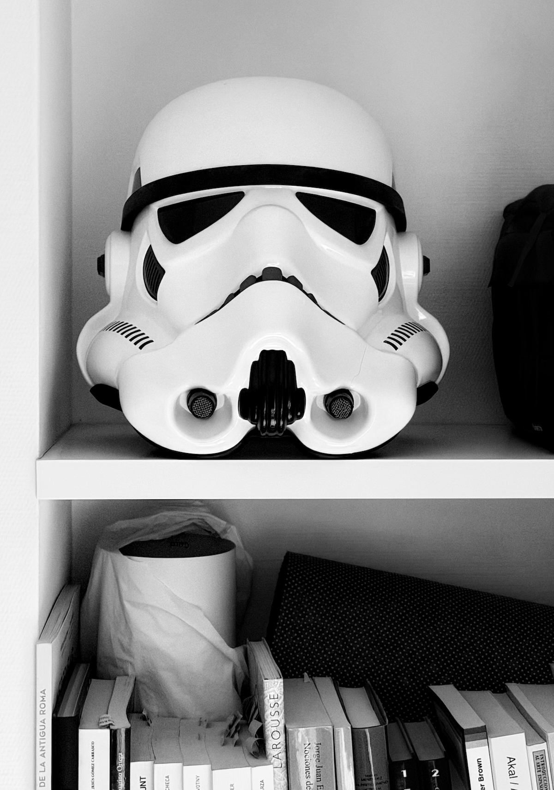

Takatoke Factory
WHOAMI
Origen: Los días del PRINT "HELLO WORLD" en GW-Basic.
Stack Evolutivo: QBasic → Pascal → Visual Basic → [HIATUS] → Objective-C → SwiftUI.
Hardware: MacBook Air M2 (8GB RAM). Sobreviviendo a los builds de Xcode una vez al día.
Inspiración: Una mezcla caótica de necesidades personales, sugerencias de amigos y el feed infinito de Reddit y Menéame.
Soy un nostálgico ochentero que cree que la mejor app es la que soluciona un problema real, por pequeño que sea. En mi estantería descansa un casco de Stormtrooper; de momento es solo decoración, pero si Xcode sigue consumiendo mi RAM a este ritmo, no descarto unirme al Imperio para terminar el siguiente proyecto.
